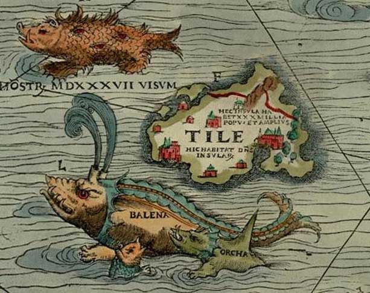

the farthermost north location:

ultima Thule beyond the borders of the known world
where an explorer established a missionary and trading post
Pytheas mentioned going in his lost work, Τὰ περὶ τοῦ Ὠκεανοῦ
"the city of Massalia sent Pytheas to scout northern Europe to see where their trade-goods were coming from."
who led many people into error saying he traversed the whole of Britain on foot, and also telling of Thule, regions in which there was no longer any proper land nor sea nor air, but a sort of mixture of all three of the consistency of a jellyfish in which one can neither walk nor sail, holding everything together, so to speak."
the place where the sun goes to rest
where night lasted only two hours
found near the frozen sea
beyond the breadth of the inhabited world
they also speak of other smaller islands
where people live on millet and other herbs, on roots and grain and honey
they have no pure sunshine
so the threshing floors are useless
there be no nights at all
not only at the summer solstice, but in the days round about it, the sun setting in the evening hides as though behind a small hill, there was no darkness in that very small space of time, and a man could do whatever he wished as though the sun remained, even remove lice from his shirt, and if they had been on a mountain-top perhaps the sun would never have been hidden from them. In the middle of that moment of time it is midnight at the equator, and thus, on the contrary, I think that at the winter solstice and for a few days about it dawn appears only for the smallest space at Thule, when it is noon at the equator. Therefore those authors are wrong and give wrong information, who have written that the sea will be solid about Thule, and that day without night continues right through from the vernal to the autumnal equinox, and that vice versa night continues uninterrupted from the autumnal to the vernal equinox, since these men voyaged at the natural time of great cold, and entered the island and remaining on it had day and night alternately except for the period of the solstice. But one day's sail north of that they did find the sea frozen over. There are many other islands in the ocean to the north which can be reached from the northern islands in a direct voyage of two days and nights with sails filled with a continuously favourable wind. A devout priest told me that in two summer days and the intervening night he sailed in a two-benched boat and entered one. There is another set of small islands, nearly all separated by narrow stretches of water; in these for nearly a hundred years hermits sailing from our country have lived. But just as they were always deserted from the beginning of time, so now because of the Northman pirates they are emptied of anchorites, and filled with countless sheep and very many diverse kinds of sea-birds. I have never found these islands mentioned in the authorities.
A crater lake named Kaali appears to be have been formed by a meteor strike in prehistory.
the terminus of the known-explorable upstream end of the passage
the blue-painted native of Thule, when he fights, drives around the close-packed ranks in his scythe-bearing chariot
rivers ran red with slaughter; Thule was warm with the blood; Hibernia wept for the heaps of slain men, lying icebound beneath the pole-star
For though the earth tremble before the laws you give, though Thule bow to your service on the farthest bounds, yet if thou canst not drive away black cares, if thou canst not put to flight complaints, then is no true power thine.
Seneca the Younger writes of a day when new lands will be discovered beyond Thule.